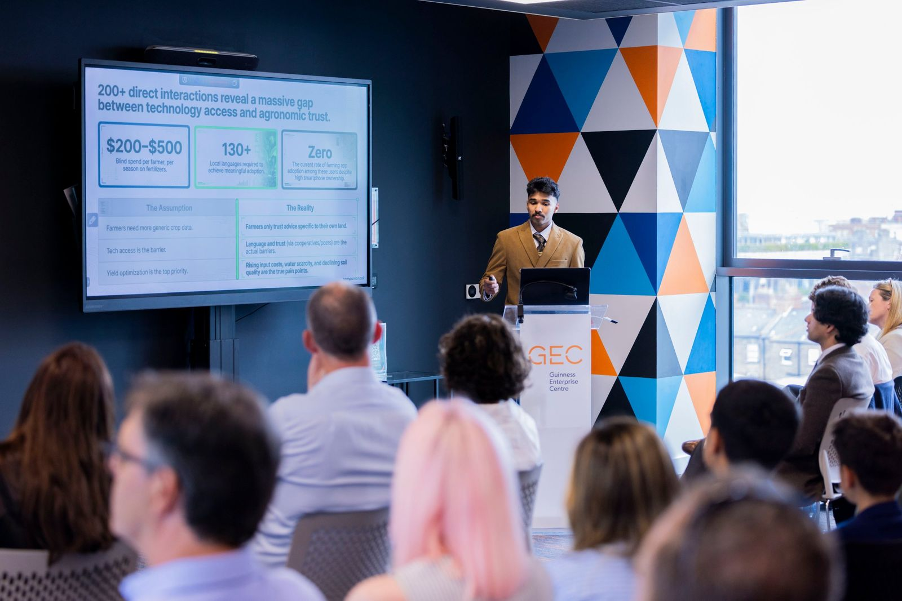

CompanionSoil AI
An AI farming assistant that tells smallholder farmers how much to water and fertilise, in their own language.
- 1st of 700+ universities, AWS GenAI Hackathon 2025
- Live on 3 farms
- 40+ shipped versions
Before With CompanionSoil. Modelled figures, not a field trial.

The problem
I grew up watching farmers in Kerala, my grandfather among them, guess at water and fertiliser. Bad guesses cost the people with the least safety net the most.
What I built
A platform I designed and shipped alone: Next.js, FastAPI and PostgreSQL on Google Cloud Run via Docker and GitHub Actions. Evapotranspiration models drive irrigation; Gemini reads soil photos in several languages; a geospatial pipeline pulls satellite, weather and FAO data.
The result
Running on three working farms, and first place against teams from more than 700 universities.
What I learned
A feature isn't finished until it works on someone else's day. Most of the 40+ versions came from farmers telling me what wasn't working.